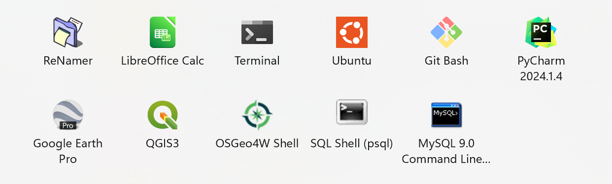
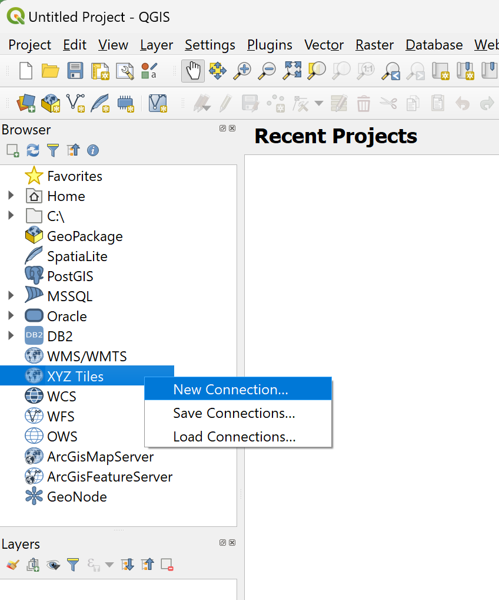

Software#

Mapping:
QGIS (+ OSGeo4W/gdal, PostGIS/postgreSQL)
Relational Database Management System (RDBMS): NOTE different SQL syntax
postgreSQL (w/ postGIS plugin to connect to QGIS)
MySQL NOTE: Select your OS
SQLite (sqlite3 pre-installed with Python)
Scripting:
-
Personal preference: For large-scale data processing & analysis
-
Personal preference: For easier small-scale statistics/tabular analysis & data visualization
Virtual Environment:
venv (pre-installed with Python)
-
Pro: easy GDAL install
Con: slower to install packages, though Micromamba is a lightweight alternative
IDE:
Version Control:
Install notes:#
When installing & setting up application, choose the custom setup (but probably use defaults) to see where files are placed, what is installed, etc.
Remember to delete app_installer.exe file from Downloads folder after install is complete
Linux & Windows PATH variable#
PATH environment variable is a list of folders where the terminal looks to run a program.
when installing an application, or {app} such as python, anaconda (NOT RECOMMENDED), or Git, select ‘Add {app}.exe to PATH’ to add the python install location to your user’s
otherwise, manually add the application to path by adding that program’s install location to the PATH variable:
echo export PATH="{path_to_python}:$PATH" >> ~/.profile
Mac:
i) open the terminal and enter the following command on a Mac: sudo nano /etc/paths (enter user password when prompted)
ii) in the last row of the file enter your app’s install location, ex: /Library/PostgreSQL/16/bin
QGIS#
Add basemaps:#
In the Browser pane: under XYZ Tiles, right-click and select New Connection 
Enter the Name and URL from a row in the table below into the XYZ Connection popup window.
Name |
URL |
|---|---|
ESRI World Imagery |
https://services.arcgisonline.com/arcgis/rest/services/World_Imagery/MapServer/tile/{z}/{y}/{x} |
Bing Aerial |
|
Google Satellite |
|
Google Hybrid |
|
Open Topo |
{kind=link}
{kind=link}
To view, drag the new connection (has a grid symbol & located under XYZ Tiles) to the Map pane.
Add open-source tool plugins:#
Plugins dropdown > Manage and Install Plugins > search for your plugin
ESRI Products#
1) ArcGIS Pro#
2) ArcGIS Enterprise Software Components:#
ArcGIS Server
ArcGIS Enterprise portal
ArcGIS Data Store
ArcGIS Web Adaptor
3) ArcGIS Online (AGOL) Components:#
Data Management#
Data Analysis#
Content Creation#
Web Maps
create map: choose basemap, add layers, apply styles, configure popups
set map properties: add bookmark, configure feature search, disable editing, tags, description, metadata, etc.
Scenes can be created from AGOL Scene Viewer or ArcGIS Pro:
Web Apps can be created from maps, scenes, or groups and need to be shared:
-
add actions, selectors/triggers
-
create experience: choose theme, set data source, refine layout, configure widgets, add page
-
Notebooks can be created or uploaded from your computer as an
.ipynbfile
Content Sharing:#
Choose content sharing level (with your group, organization, or everyone).
To share items, a user must have appropriate permissions to share content.
Feature layers and content must be made public to share with public.
Ex: When you create an app using ArcGIS Configurable Apps, you can authorize its subscriber content in the configuration pane by confirming the layers to allow for public use.
License Management & Credits#
-
ArcGIS Pro license types: named user (default), single-use, concurrent use
ArcGIS Enterprise is licensed per user and by system capacity. Users are licensed based on user types, providing secure access to information and content creation capabilities.
ArcGIS Server can be licensed in a variety of roles, depending on the capabilities you want to enable for your deployment. Server licensing roles define the capabilities of each ArcGIS Enterprise server machine or site.
ESRI products are licensed based on user types. What tasks each member in an organization is allowed to perform on ESRI products depend on a combination of the following interrelated factors:
User types determine the number of credits and privileges that can be granted to the member through a default role or custom role. User types include the following: Viewer, Contributor, Mobile Worker, Creator, Professional
Roles define the set of privileges assigned to a member. Default roles include the following: Viewer, Data Editor, User, Publisher, Facilitator, Administrator
Privileges allow members to perform various tasks in an organization, and are defined by their role. Organization administrator can change privileges of custom roles, not default roles.